LNbits - The Swiss Army Knife of Infrastructure
LNbits is a wallet solution and account system that runs on top of an LND node, allowing you to segment funds and enable extended functionalities through extensions. It is the engine that processes transactions for other services. It can be said to be the Lightning Swiss Army knife.
5.1 Initializing LNbits
The first thing we will do is access the website we configured in the NPM tutorial: https://lnbits.cashu4community.xyz. Since it is the first time, a page will be shown that will allow us to create the superuser account, which has maximum privileges. We will only need to enter a username and password (twice).
Image 1: Creating superuser account in LNbits.
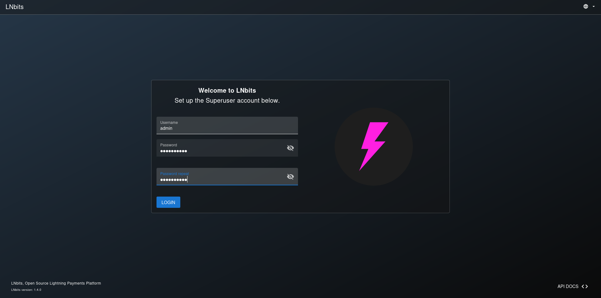
- Enter the username.
- Enter the account password twice. A password with at least 12 characters, uppercase, lowercase, and special characters is recommended.
- Press
LOGINto create the account.
Image 2: Login Page.
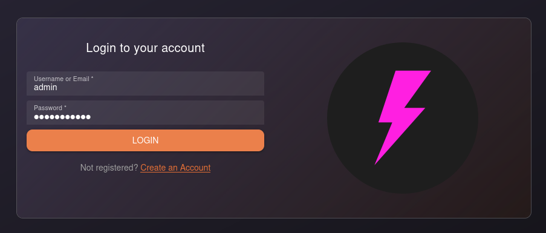
- Enter the username created in the previous step.
- Do the same with the password.
- Click
LOGIN.
After logging in, the LNbits settings page loads. We can navigate through different sections; this tutorial will cover the most important ones.
Image 3: LNbits settings page.
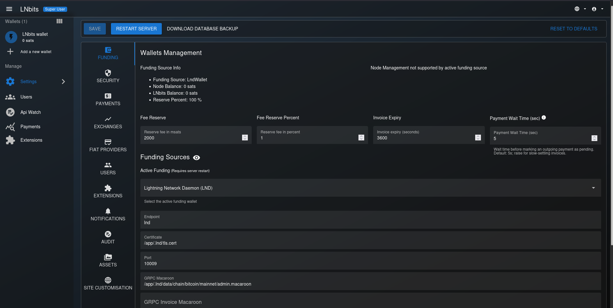
5.1.1 Funding Settings (LNbits Lightning Backend)
Image 4: Settings Page (Funding).
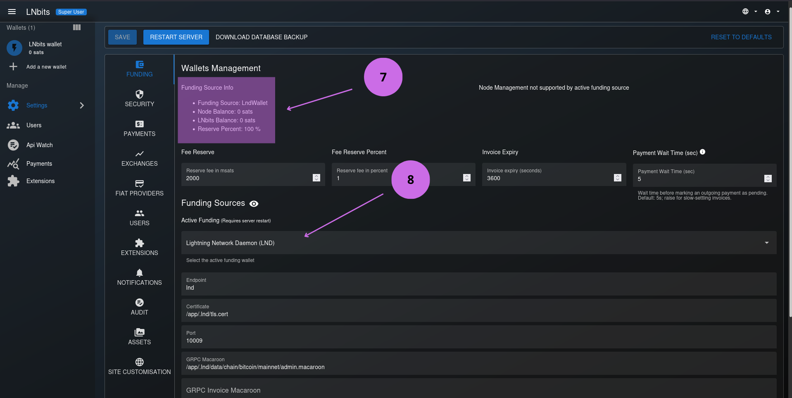
- Shows the total balance in LNbits accounts and the Node balance.
- The backend for LNbits in the infrastructure is Lightning Network Daemon (LND). This configuration is defined in the .env file located in the
app-data/lnbits/directory.
5.1.2 Payment Settings
Image 5: Settings Page (Payments).
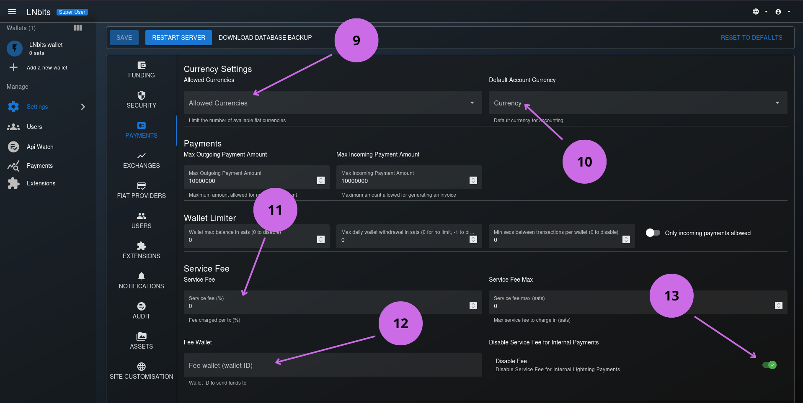
- Select the fiat currencies that will be available in LNbits.
- Select the default currency that will display the value of sats in the account.
- Select the fee that will be charged for outgoing transactions (only if you want to obtain a small profit).
- If you assign a value to the transaction fee, you must add the ID of the wallet that will receive the fees. In the following steps we will explain how to obtain the wallet ID.
- Disable fees for internal transactions.
SAVE and finally RESTART SERVER. If we don't, the changes will not be applied.
5.1.3 Extension Settings
From this page we can select the extensions that will load by default, both in administrative sections and in standard user (non-privileged) sections.
Image 6: Settings Page (Extensions).
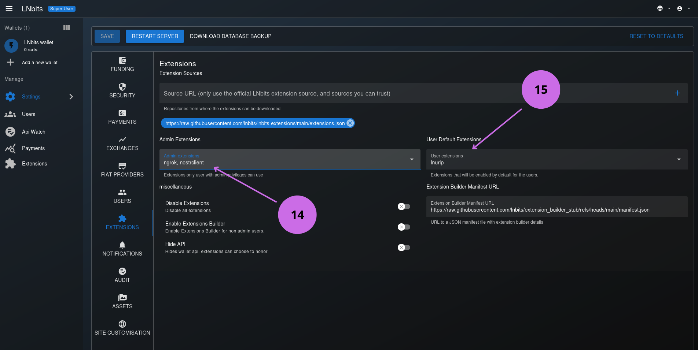
- Select extensions for administrator users.
- Select extensions for the rest of the users.
Extensions section in the options menu on the left side of the page.
5.2 Creating a Wallet for Transaction Fees
When we log in to LNbits, a default wallet is created. We will rename it and use it to receive transaction fees.
Image 7: Renaming the default wallet.
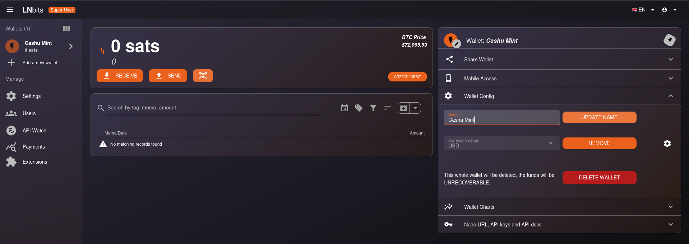
- Select the wallet.
- Click on the right panel on
Wallet Config. - Change the wallet name to
Service fees. - Click the
UPDATE NAMEbutton.
This way we have changed the wallet name to know its purpose.
Image 8: Getting the Service fees wallet ID.
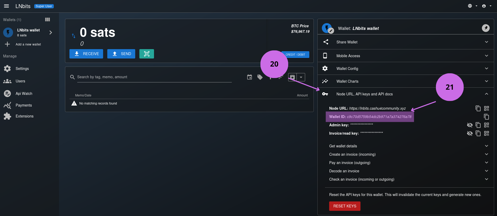
- Click on the right panel on
Node URL, API Key and API docs. - Copy the
Wallet IDfield.
Then we go to the Payment settings (which we saw in section 5.1.2) and paste the wallet ID in the field of point 12.
5.3 LNbits Extensions
LNbits extensions are plugins that add specific functionalities. They allow everything from creating wallets with personalized rules (limits, expiration) to integrating payment systems, e-commerce, tickets, games, crowdfunding, or mechanisms like LNURL. Being modular, install only what you need without bloating the system.
Now we will see how to add and remove extensions.
Image 9: Extensions.
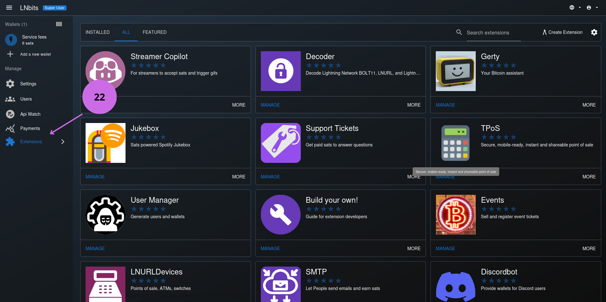
- Click on the extension view to list available extensions.
By default, only a couple of extensions are available to users, so the rest must be installed. In the following step we explain how to install them.
Image 10: Selecting the extension to install.
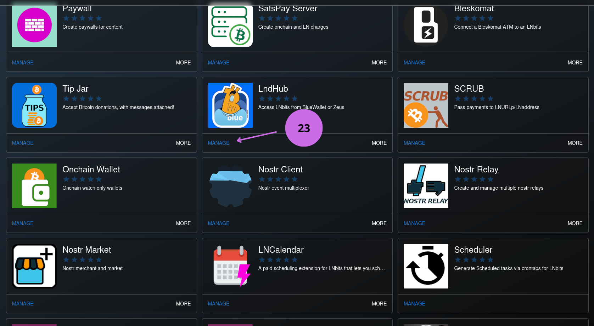
- Select the extension to install.
In the example we select the LndHub extension, very useful if we want to use wallets like Blue Wallet or Zeus Wallet to manage funds, pay and receive payments in our account.
Image 11: Selecting version to install.

- Deploy the version list.
- Select the available one by clicking
INSTALL.
After a few seconds, the extension will appear in the installed view.
Image 12: Installed extensions.
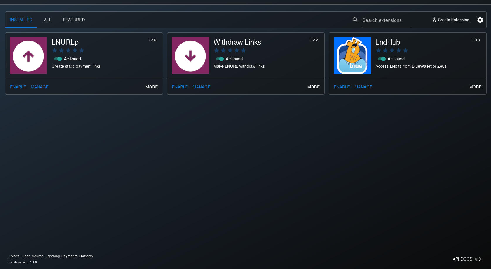
To begin, I recommend installing the LNURLp, Withdraw Links, and LndHub extensions. After this, we can go to settings section Extensions and enable all installed extensions for all users as we saw in step 5.1.3 point 15.
5.4 Other Options
In the main view we can find other options that will allow us to have broader control of what happens in our LNbits instance.
Image 13: Advanced Administration Options for LNbits instance.
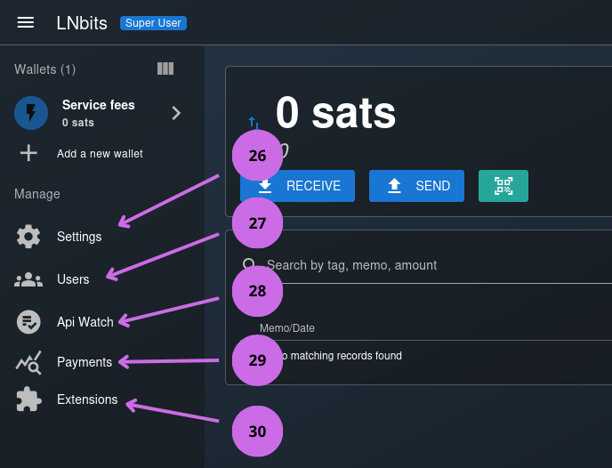
- LNbits Settings.
- User and wallet administration.
- Real-time requests to the LNbits API.
- View of payments made, with useful information for searches.
- Extension administration.
5.5 Backing up LNbits Database and Configurations
LNbits allows performing a backup of the database, extensions, and logs from the web interface. If we want to do a manual backup, it is enough to go to settings and click DOWNLOAD DATABASE BACKUP as shown in the following image.
Image 14: Saving the database from settings.
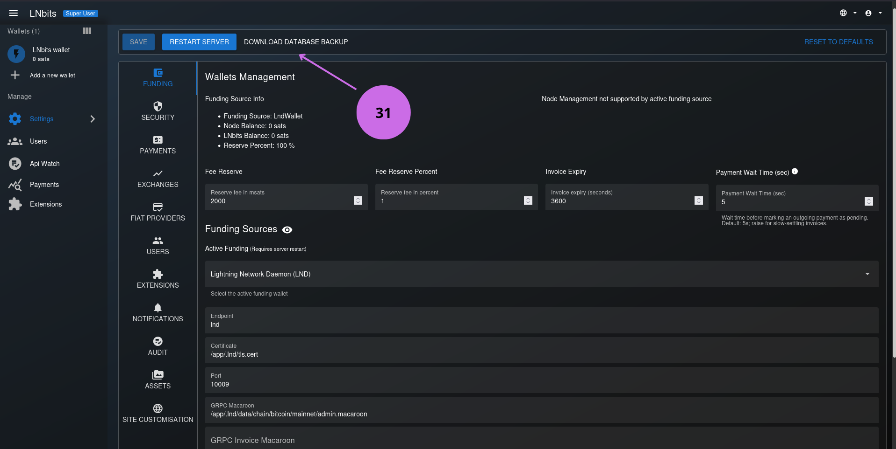
- Download the database.